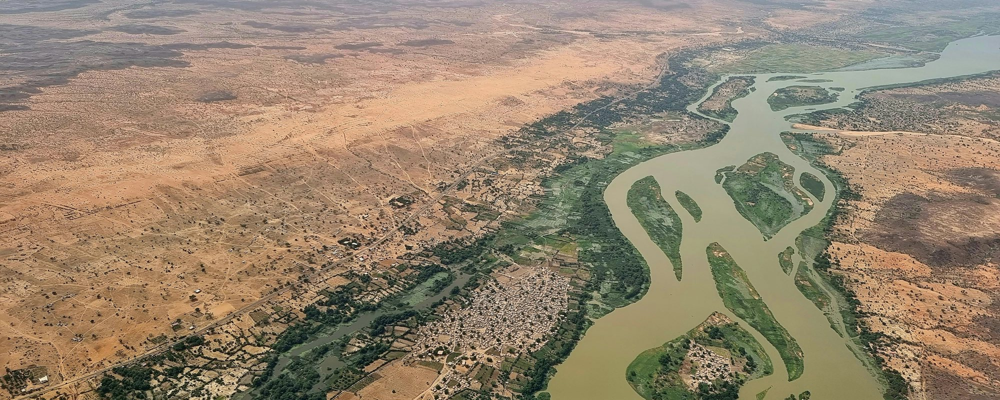

Sound systems for water and climate finance
Sector strategy, finance and climate evidence for public and private clients.
Discuss a project
Areas of work
Water and sanitation sector strategy and finance
Governance, policy, financing and institutional diagnostics, with ministries and agencies.
MoreWater and sanitation data and monitoring
Data integrity audits, monitoring systems, and analysis that leads to policy recommendations.
MoreClimate rationale drafting
I draft the climate rationale for a Green Climate Fund (GCF) concept note or funding proposal: the evidence chain from climate hazard to proposed activity.
MoreProposal quality assurance
An independent check of a climate rationale or funding proposal before submission: evidence, internal consistency and fit with the fund's criteria.
MoreCorporate water claims and sustainability
Whether water replenishment and similar claims are supported by the evidence behind them.
More
Nearly 20 years in water, sanitation and climate programmes
I work with governments, development agencies, the firms that prepare climate finance proposals, and companies with water commitments. Before working independently, I led national water, sanitation and hygiene (WASH) programmes for UNICEF in Côte d'Ivoire, Burkina Faso and Burundi, and coordinated a multi-country GCF concept note on water security in the Sahel with the African Development Bank and five governments.
More about my background →Let's discuss how I can help you.
Describe the problem you need to solve and your timeline.
Get in touch